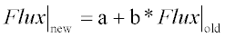

Modifies ray fluxes of currently selected ray data.
Syntax
FLUX a [ b [ i j ] ]
TOTAL SOU m
| Option | Description |
|---|
| a b | scale factors for ray fluxes |
| i j | inclusive ray numbers |
| TOTAL | change the fluxes to produce a total flux b |
| SOU m | source number |
Remarks
- Scales the fluxes for the currently SELECTed ray set (or the
rays specified by the optional i and j)
according to the following equation:

- The default for b is
zero.
- Alternatively, the TOTAL
option specifies that the fluxes be changed to produce a total flux b.
- ASAP ignores rays with fluxes less than or
equal to the CUTOFF value in any calculation.
-
The presence of a BEAMS command changes the way ASAP assigns
flux values to the rays. Given a GRID XXX R r p q s t m n
command where XXX is either elliptic or rectangular, the flux
per ray is computed as follows:
BEAMS INCOHERENT GEOMETRIC: (q - p)(t - s) / (mn) = flux / ray
BEAMS COHERENT DIFFRACT: (q - p)(t - s) / (2mn w^2) = flux /
ray
- The GRID POLAR command
is too general for this simple calculation to apply since ASAP has to perform all
kinds of manipulations (including a least squares fit) to get the fluxes correct.
- By default all rays entered through the
RAYSET command have unity flux assigned to them.
FLUX Examples